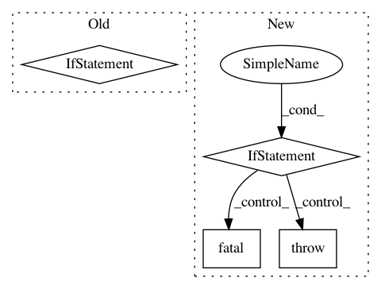

2345eb88f3264da85643a4d9d5adec3cf6f9b973,niftynet/io/image_reader.py,,_filename_to_image_list,#Any#Any#Any#,252
Before Change
decimals=1, length=10, fill="*")
// combine fieldnames and volumes as a dictionary
_dict = {field: _create_image(file_list, idx, modalities, data_param)
for (field, modalities) in mod_dict.items()}
volume_list.append(_dict)
return volume_list
After Change
_dict[field] = image_instance
if _dict:
volume_list.append(_dict)
if not volume_list:
tf.logging.fatal(
"empty filename lists, please check the csv "
"files. (removing csv_file keyword if it is in the config file "
"to automatically search folders and generate new csv "
"files again)\n\n"
"Please note in the matched file names, each subject id are "
"created by removing all keywords listed `filename_contains` "
"in the config.\n\n"
"E.g., `filename_contains=foo, bar` will match file "
"foo_subject42_bar.nii.gz, and the subject id is _subject42_.")
raise IOError
return volume_list
def _create_image(file_list, idx, modalities, data_param):
In pattern: SUPERPATTERN
Frequency: 4
Non-data size: 4
Instances
Project Name: NifTK/NiftyNet
Commit Name: 2345eb88f3264da85643a4d9d5adec3cf6f9b973
Time: 2017-11-14
Author: wenqi.li@ucl.ac.uk
File Name: niftynet/io/image_reader.py
Class Name:
Method Name: _filename_to_image_list
Project Name: NifTK/NiftyNet
Commit Name: 5a29571bdeb6deaffa8ed1e7b404566bc7b62505
Time: 2017-08-19
Author: wenqi.li@ucl.ac.uk
File Name: niftynet/io/image_reader.py
Class Name: ImageReader
Method Name: initialise_reader
Project Name: NifTK/NiftyNet
Commit Name: baecce5a6fbe4576ca8348a93dc56f07e7ba84f6
Time: 2019-06-05
Author: ucabtmv@ucl.ac.uk
File Name: niftynet/contrib/csv_reader/csv_reader.py
Class Name: CSVReader
Method Name: _parse_csv
Project Name: facebookresearch/Horizon
Commit Name: 00134f9c8b81b48ab29fe58698cf8b78e27cf344
Time: 2018-02-06
Author: jjg@fb.com
File Name: ml/rl/preprocessing/preprocessor_net.py
Class Name: PreprocessorNet
Method Name: preprocess_blob